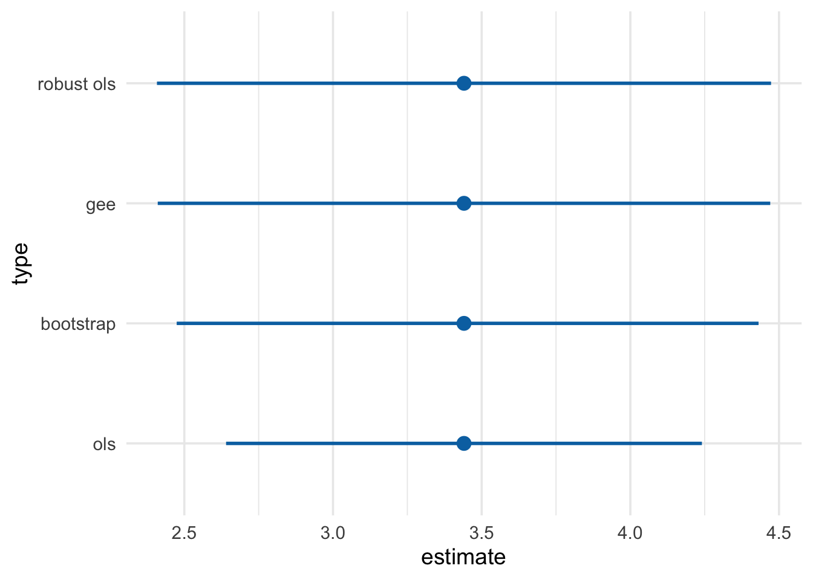

9 Program 12.2
# Estimation of IP weights via a logistic model
propensity <- glm(qsmk ~ sex + race + age + I(age^2) + education +
smokeintensity + I(smokeintensity^2) +
smokeyrs + I(smokeyrs^2) + exercise + active +
wt71 + I(wt71^2),
family = binomial(), data = nhefs_complete)
propensity %>%
tidy(conf.int = TRUE) %>%
select(-statistic, -p.value) %>%
mutate_at(vars(-term, -std.error), exp) %>%
knitr::kable(digits = 2)| term | estimate | std.error | conf.low | conf.high |
|---|---|---|---|---|
| (Intercept) | 0.11 | 1.38 | 0.01 | 1.56 |
| sex1 | 0.59 | 0.15 | 0.44 | 0.80 |
| race1 | 0.43 | 0.21 | 0.28 | 0.64 |
| age | 1.13 | 0.05 | 1.02 | 1.25 |
| I(age^2) | 1.00 | 0.00 | 1.00 | 1.00 |
| education2 | 0.97 | 0.20 | 0.66 | 1.43 |
| education3 | 1.09 | 0.18 | 0.77 | 1.55 |
| education4 | 1.07 | 0.27 | 0.62 | 1.81 |
| education5 | 1.61 | 0.23 | 1.03 | 2.51 |
| smokeintensity | 0.93 | 0.02 | 0.90 | 0.95 |
| I(smokeintensity^2) | 1.00 | 0.00 | 1.00 | 1.00 |
| smokeyrs | 0.93 | 0.03 | 0.88 | 0.98 |
| I(smokeyrs^2) | 1.00 | 0.00 | 1.00 | 1.00 |
| exercise1 | 1.43 | 0.18 | 1.01 | 2.04 |
| exercise2 | 1.49 | 0.19 | 1.03 | 2.15 |
| active1 | 1.03 | 0.13 | 0.80 | 1.34 |
| active2 | 1.19 | 0.21 | 0.78 | 1.81 |
| wt71 | 0.98 | 0.03 | 0.94 | 1.04 |
| I(wt71^2) | 1.00 | 0.00 | 1.00 | 1.00 |
nhefs_complete <- propensity %>%
augment(type.predict = "response", data = nhefs_complete) %>%
mutate(wts = 1 / ifelse(qsmk == 0, 1 - .fitted, .fitted))
nhefs_complete %>%
summarize(mean_wt = mean(wts), sd_wts = sd(wts))## # A tibble: 1 x 2
## mean_wt sd_wts
## <dbl> <dbl>
## 1 2.00 1.47ggplot(nhefs_complete, aes(wts)) +
geom_density(col = "#E69F00", fill = "#E69F0095") +
scale_x_log10() +
theme_minimal(base_size = 14) +
xlab("log10(Weights)")
library(geepack)
gee_model <- geeglm(wt82_71 ~ qsmk, data = nhefs_complete,
std.err = "san.se", # default robust SE
weights = wts, # inverse probability weights
id = id,
corstr = "independence") # independent correlation structure
tidy(gee_model)## # A tibble: 2 x 5
## term estimate std.error statistic p.value
## <chr> <dbl> <dbl> <dbl> <dbl>
## 1 (Intercept) 1.78 0.225 62.7 2.33e-15
## 2 qsmk 3.44 0.525 42.9 5.86e-11## # A tibble: 2 x 5
## term estimate std.error statistic p.value
## <chr> <dbl> <dbl> <dbl> <dbl>
## 1 (Intercept) 1.78 0.288 6.18 8.40e-10
## 2 qsmk 3.44 0.408 8.43 7.47e-17Xie, Yihui. 2015. Dynamic Documents with R and Knitr. 2nd ed. Boca Raton, Florida: Chapman; Hall/CRC. http://yihui.name/knitr/.
———. 2018. Bookdown: Authoring Books and Technical Documents with R Markdown. https://CRAN.R-project.org/package=bookdown.